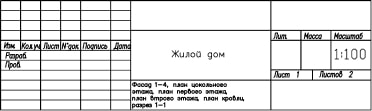
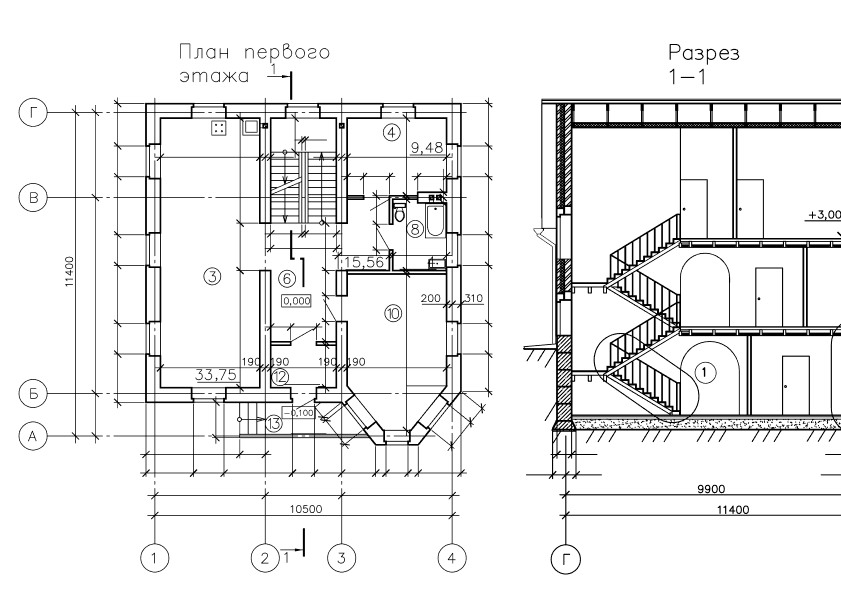
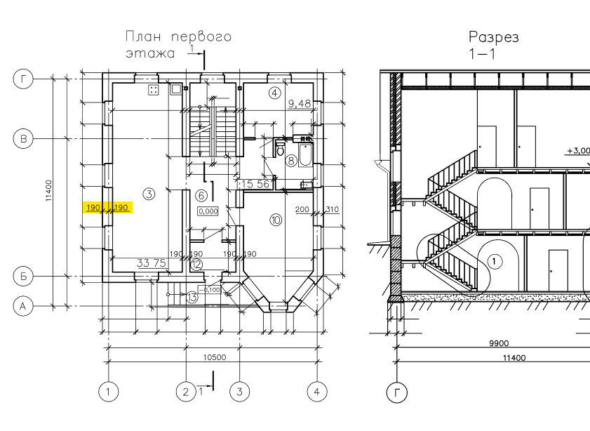

Найти ошибку
в чертежах
Инженер-проектировщик знает, как построить надёжное здание — и не последнюю роль в этом процессе играют чертежи.
Перед вами часть проекта будущего дома. Попробуйте визуально
определить, где на чертеже
допущена
ошибка, и нажмите на неё.
Подсказка: обратите внимание на
данные о толщине стен. Если возникнут трудности, загляните
в справочник.


